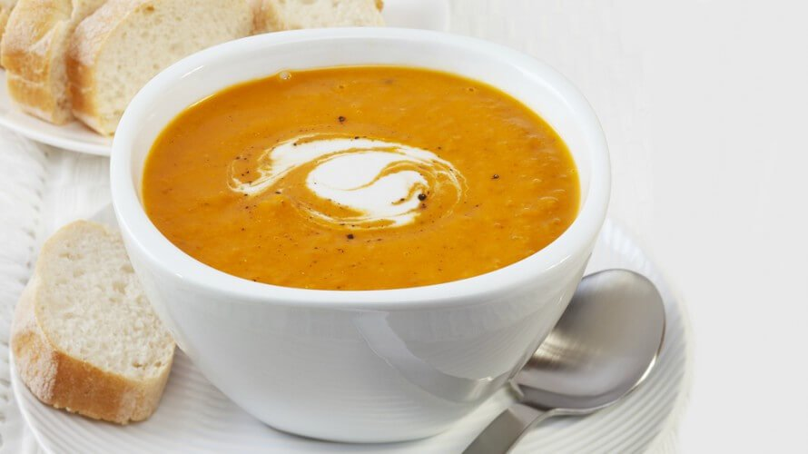

Povrtna krem juha

Napomena. Za ovu juhu bit će ti potreban štapni mikser.
Sastojci
- 5 dl vode
- povrće (puter tikva, cvjetača ili brokula)
- 0.5 dl vrhnja za kuhanje
- začini - sol, papar (opcionalno: muškatni oraščić, đumbir, kajenski papar)
Priprema
- Ako koristiš svježe povrće, prvo ga operi i očisti. Može se koristiti i prethodno zamrznuto povrće. Količina povrća treba biti takva da taman svo povrće bude pokriveno vodom.
- Stavi vodu kuhati u loncu volumena barem 1 l. Kad voda proključa, ubaci povrće po izboru. Kuhaj povrće dok ne omekani.
- Štapnim mikserom usitni povrće zajedno s vodom.
- Dodaj vrhnje za kuhanje i začine.
Napomenica. U juhu od puter tikve može se dodati i malo krumpira, pazeći da količina vode i dalje bude adekvatna; juha tada dobije jako lijepu kremastu teksturu, a i okus je fonomenalan. Također, moguće je i kombinirati cvjetaču i brokulu u istoj juhi.